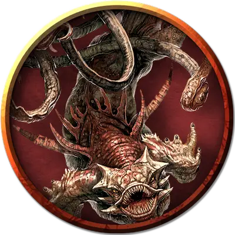

Деформированный кракен
Malformed Kraken
Огромный Монстр, хаотично-злой

Класс Доспеха 17 (природный доспех)
Хиты 172 (15к12 + 75)
Скорость 20 футов, плавая 40 футов
| мод | спас | ||
|---|---|---|---|
| СИЛ | 25 | +7 | +11 |
| ЛОВ | 11 | +0 | +0 |
| ТЕЛ | 20 | +5 | +9 |
| мод | спас | ||
|---|---|---|---|
| ИНТ | 11 | +0 | +4 |
| МДР | 15 | +2 | +6 |
| ХАР | 15 | +2 | +6 |
Сопротивление урону дробящий, колющий, рубящий от немагических атак
Иммунитет к урону электричество
Иммунитет к состояниям паралич, испуг
Чувства истинное зрение 60 футов, пассивное Восприятие 12
Языки понимает Общий, но не говорит, Телепатия 60 фт.
Опасность 10 (5900 опыта)
Бонус мастерства +4
Среда обитания Под водой
Особенности
Амфибия. Кракен может дышать и воздухом и под водой.
Осадное чудовище. Кракен причиняет двойной урон предметам и строениям.
Действия
Мультиатака. Кракен совершает три атаки Щупальцем. Одну из них он может заменить Укусом и любая из них может быть заменена Броском.
Укус. Рукопашная атака оружием: +11 к попаданию, досягаемость 5 футов, одна цель. Попадание: 16 (2к8 + 7) колющего урона.
Щупальце. Рукопашная атака оружием: +11 к попаданию, досягаемость 20 футов, одна цель. Попадание: 14 (2к6 + 7) дробящего урона, и цель становится схваченной (Сл высвобождения 16). Пока цель схвачена, она опутана. У кракена десять щупалец, и каждое может держать в захвате одну цель.
Бросок. Один несомый предмет с размером не больше Среднего, или существо, схваченное кракеном, бросается на расстояние до 60 футов в случайном направлении, после чего падает ничком. Если брошенная цель попадает в твердую поверхность, цель получает 3 (1к6) дробящего урона за каждые 10 футов броска. Если цель была брошена в другое существо, это существо должно преуспеть в спасброске Ловкости Сл 16, иначе получит такой же урон и будут сбиты с ног.
Гроза. Кракен магическим образом создает три разряда молнии, каждый из которых может ударить в цель, видимую в пределах 150 футов от кракена. Цель должна совершить спасбросок Ловкости Сл 16, получая 16 (3к10) урона электричеством при провале, или половину этого урона при успехе.
Описание
В Смерти в Тэе обитает множество обитателей, которые не обладают всеми особенностями или способностями обычных существ своего вида. Безусловно, самым могущественным из этих “низших” существ является деформированный кракен, который содержится в бассейне с морской водой и не такой большой и крепкий, как настоящий кракен.